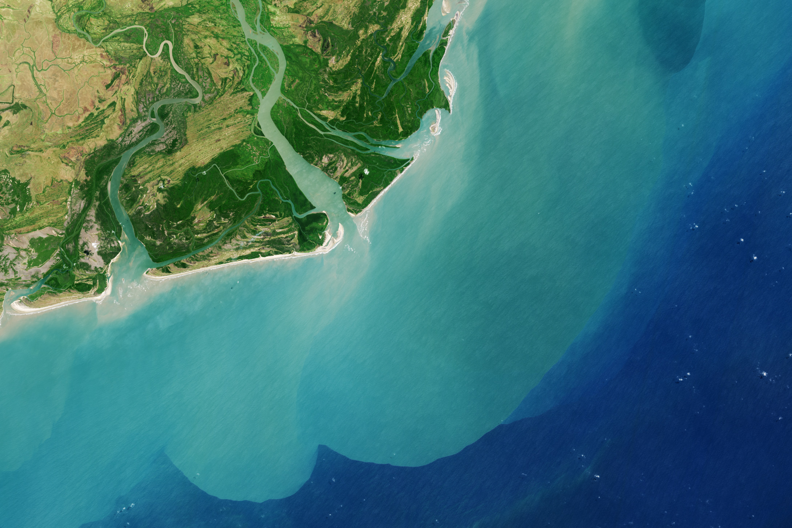

Welkom op de website van de Nationale delta’s. In de wereld zijn vele delta’s de een heeft een grotere schaal dan de andere, andere delta’s zijn weer binnenlands gevormd en andere zijn weer aan de zeekust gevormd. Kortom er zijn genoeg verschillende delta’s. Op deze website zullen we er twee uithalen en deze op verschillende thema’s vergelijken. De 3 thema’s zijn als volgt: Klimaat, infrastructuur en urban development. Bij het thema Klimaat zal er gekeken worden naar gevaren die ontstaan zitten door klimaatveranderingen maar er zal ook gekeken worden naar de globale ligging van de delta’s en wat hiervan de positieve of negatieve invloeden zijn. Urban development is een ander thema waarin u mee zal worden genomen in de landbezetting en landgebruik binnen het stroomgebied van de delta’s. Brengt de delta gevaren met zich mee voor deze bedrijven en woningen? Goede Infrastructuur is belangrijk voor een grote en economisch winstgevende delta. Maar dit zal niet zonder gevaar zijn. Wat gebeurdt er bijvoorbeeld als een delta meerdere keren in een jaar overstroomt of last heeft van heftige windkrachten.

Klimaat is altijd belangrijk geweest. Echter is er niet altijd bij stilgestaan. De laatste 30 jaar merk je in het nieuws en omgeving dat klimaat een steeds belangrijk topic aan het worden is. In deze twee delta's heerst een ander klimaat maar is er wel gelijke dreigingen door bijvoorbeeld de zeestijging. Lees hier meer over in de volgedende tabs.
Infrastructuur geeft de goederenstromen weer binnen een regio. Hieraan kunnen verschillende anakyse uit worden ontrokken. Lees in de volgende tabs meer over deze analyses.
Stedenlijke ontwikkeling is een belangrijk aspect van hoe een gebied zich ontwikkeld. Dit bepaald bewoners hun gedrag en dit verklaart hoe de stad zal worden gebruikt. Bij beide delta's is hier op verschillende manieren stedenbouw plaats gevonden. Lees in de volgende tabs de analyses.